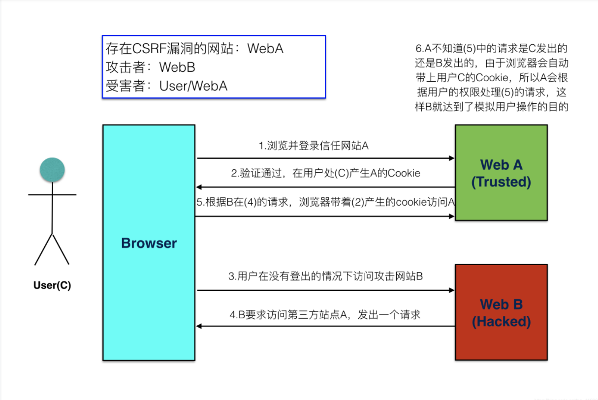

# CSRF 概念
CSRF 跨站点请求伪造 (Cross—Site Request Forgery)，跟 XSS 攻击一样，存在巨大的危害性，你可以这样来理解：
攻击者盗用了你的身份，以你的名义发送恶意请求，对服务器来说这个请求是完全合法的，但是却完成了攻击者所期望的一个操作，比如以你的名义发送邮件、发消息，盗取你的账号，添加系统管理员，甚至于购买商品、虚拟货币转账等。 如下：其中 Web A 为存在 CSRF 漏洞的网站，Web B 为攻击者构建的恶意网站，User C 为 Web A 网站的合法用户。尽管听起来跟 XSS 跨站脚本攻击有点相似，但事实上 CSRF 与 XSS 差别很大，XSS 利用的是站点内的信任用户，而 CSRF 则是通过伪装来自受信任用户的请求来利用受信任的网站。
# CSRF 攻击示意图

首先用户 C 浏览并登录了受信任站点 A；
登录信息验证通过以后，站点 A 会在返回给浏览器的信息中带上已登录的 cookie，cookie 信息会在浏览器端保存一定时间（根据服务端设置而定）；
完成这一步以后，用户在没有登出（清除站点 A 的 cookie）站点 A 的情况下，访问恶意站点 B；
这时恶意站点 B 的某个页面向站点 A 发起请求，而这个请求会带上浏览器端所保存的站点 A 的 cookie；
站点 A 根据请求所带的 cookie，判断此请求为用户 C 所发送的。
因此，站点 A 会报据用户 C 的权限来处理恶意站点 B 所发起的请求，而这个请求可能以用户 C 的身份发送 邮件、短信、消息，以及进行转账支付等操作，这样恶意站点 B 就达到了伪造用户 C 请求站点 A 的目的。
受害者只需要做下面两件事情，攻击者就能够完成 CSRF 攻击：
- 登录受信任站点 A，并在本地生成 cookie；
- 在不登出站点 A（清除站点 A 的 cookie）的情况下，访问恶意站点 B。
很多情况下所谓的恶意站点，很有可能是一个存在其他漏洞（如 XSS）的受信任且被很多人访问的站点，这样，普通用户可能在不知不觉中便成为了受害者。
# CSRF 漏洞检测：
检测 CSRF 漏洞是一项比较繁琐的工作，最简单的方法就是抓取一个正常请求的数据包，去掉 Referer 字段后再重新提交，如果该提交还有效，那么基本上可以确定存在 CSRF 漏洞。
随着对 CSRF 漏洞研究的不断深入，不断涌现出一些专门针对 CSRF 漏洞进行检测的工具，如 CSRFTester，CSRF Request Builder 等。
以 CSRFTester 工具为例，CSRF 漏洞检测工具的测试原理如下：使用 CSRFTester 进行测试时，首先需要抓取我们在浏览器中访问过的所有链接以及所有的表单等信息，然后通过在 CSRFTester 中修改相应的表单等信息，重新提交，这相当于一次伪造客户端请求。如果修改后的测试请求成功被网站服务器接受，则说明存在 CSRF 漏洞，当然此款工具也可以被用来进行 CSRF 攻击。
客户端访问服务器时没有同服务器做安全验证
一切 http 参数可控
详细 CSRF 检测见 https://blog.csdn.net/qq_41901122/article/details/106408714
# 防御 CSRF 攻击
# 尽量使用 POST，限制 GET
GET 接口太容易被拿来做 CSRF 攻击，看上面示例就知道，只要构造一个 img 标签，而 img 标签又是不能过滤的数据。接口最好限制为 POST 使用，GET 则无效，降低攻击风险。
当然 POST 并不是万无一失，攻击者只要构造一个 form 就可以，但需要在第三方页面做，这样就增加暴露的可能性。
# 将 cookie 设置为 HttpOnly
CRSF 攻击很大程度上是利用了浏览器的 cookie，为了防止站内的 XSS 漏洞盗取 cookie, 需要在 cookie 中设置 “HttpOnly” 属性，这样通过程序（如 JavaScript 脚本、Applet 等）就无法读取到 cookie 信息，避免了攻击者伪造 cookie 的情况出现。
在 Java 的 Servlet 的 API 中设置 cookie 为 HttpOnly 的代码如下：response.setHeader( "Set-Cookie", "cookiename=cookievalue;HttpOnly");
# 增加 token
CSRF 攻击之所以能够成功，是因为攻击者可以伪造用户的请求，该请求中所有的用户验证信息都存在于 cookie 中，因此攻击者可以在不知道用户验证信息的情况下直接利用用户的 cookie 来通过安全验证。由此可知，抵御 CSRF 攻击的关键在于：在请求中放入攻击者所不能伪造的信息，并且该信总不存在于 cookie 之中。鉴于此，系统开发人员可以在 HTTP 请求中以参数的形式加入一个随机产生的 token，并在服务端进行 token 校验，如果请求中没有 token 或者 token 内容不正确，则认为是 CSRF 攻击而拒绝该请求。
假设请求通过 POST 方式提交，则可以在相应的表单中增加一个隐藏域：<input type="hidden" name="_toicen" value="tokenvalue"/>
token 的值通过服务端生成，表单提交后 token 的值通过 POST 请求与参数一同带到服务端，每次会话可以使用相同的 token，会话过期，则 token 失效，攻击者因无法获取到 token，也就无法伪造请求。
在 session 中添加 token 的实现代码：
HttpSession session = request.getSession(); | |
Object token = session.getAttribute("_token"); | |
if(token == null I I "".equals(token)) { | |
session.setAttribute("_token", UUID.randomUUIDO .toString()); | |
} |
# 通过 Referer 识别
根据 HTTP 协议，在 HTTP 头中有一个字段叫 Referer，它记录了该 HTTP 请求的来源地址。在通常情况下，访问一个安全受限的页面的请求都来自于同一个网站。比如某银行的转账是通过用户访问 http://www.xxx.com/transfer.do 页面完成的，用户必须先登录 www.xxx.com ，然后通过单击页面上的提交按钮来触发转账事件。当用户提交请求时，该转账请求的 Referer 值就会是
提交按钮所在页面的 URL（本例为 www.xxx. com/transfer.do ）。如果攻击者要对银行网站实施 CSRF 攻击，他只能在其他网站构造请求，当用户通过其他网站发送请求到银行时，该请求的 Referer 的值是其他网站的地址，而不是银行转账页面的地址。因此，要防御 CSRF 攻击，银行网站只需要对于每一个转账请求验证其 Referer 值即可，如果是以 www.xx.om 域名开头的地址，则说明该请求是来自银行网站自己的请求，是合法的；如果 Referer 是其他网站，就有可能是 CSRF 攻击，则拒绝该请求。
取得 HTTP 请求 Referer：String referer = request.getHeader("Referer");
# CSRF-- 绕过 Referer 技巧
CSRF 遇到 Referer 绕过的情况，有条件限制，不一定所有的 Refere 验证就可以绕过
# referer 条件为空条件时
解决方案:
利用 ftp://, http://, https://, file://, javascript:, data:
这个时候浏览器地址栏是 file:// 开头的，如果这个 HTML 页面向任何 http 站点提交请求的话，这些请求的 Referer 都是空的。
例:
- 利用 data: 协议
<html> | |
<body> | |
<iframe src="data:text/html;base64,PGZvcm0gbWV0aG9kPXBvc3QgYWN0aW9uPWh0dHA6Ly9hLmIuY29tL2Q+PGlucHV0IHR5cGU9dGV4dCBuYW1lPSdpZCcgdmFsdWU9JzEyMycvPjwvZm9ybT48c2NyaXB0PmRvY3VtZW50LmZvcm1zWzBdLnN1Ym1pdCgpOzwvc2NyaXB0Pg=="> | |
</body> | |
</html> |
bese64 编码 解码即可看到代码
- 利用 https 协议
https 向 http 跳转的时候 Referer 为空
拿一个 https 的 webshell<iframe src="https://xxxxx.xxxxx/attack.php">
attack.php 写上 CSRF 攻击代码
# 判断 Referer 是某域情况下绕过
比如你找的 csrf 是 http://xxx.com 验证的 referer 是验证的 *.http://xx.com 可以找个二级域名 之后 <img "csrf地址"> 之后在把文章地址发出去 就可以伪造。
# 判断 referer 是否存在某关键字
referer 判断存在不存在 http://google.com 这个关键词
在网站新建一个 http://google.com 目录 把 CSRF 存放在 http://google.com 目录，即可绕过
# 判断 referer 是否含有某域名
判断了 Referer 开头是否以 http://126.com 以及 126 子域名 不验证根域名为 http://126.com 那么我这里可以构造子域名 http://x.126.com.xxx.com 作为蠕虫传播的载体服务器，即可绕过。
# Reference
https://www.jianshu.com/p/67408d73c66d
https://blog.csdn.net/qq_41606973/article/details/86504747
https://gitchat.csdn.net/activity/5a0ba347e1f755571483ea5a
https://www.cnblogs.com/Fluorescence-tjy/p/6100310.html